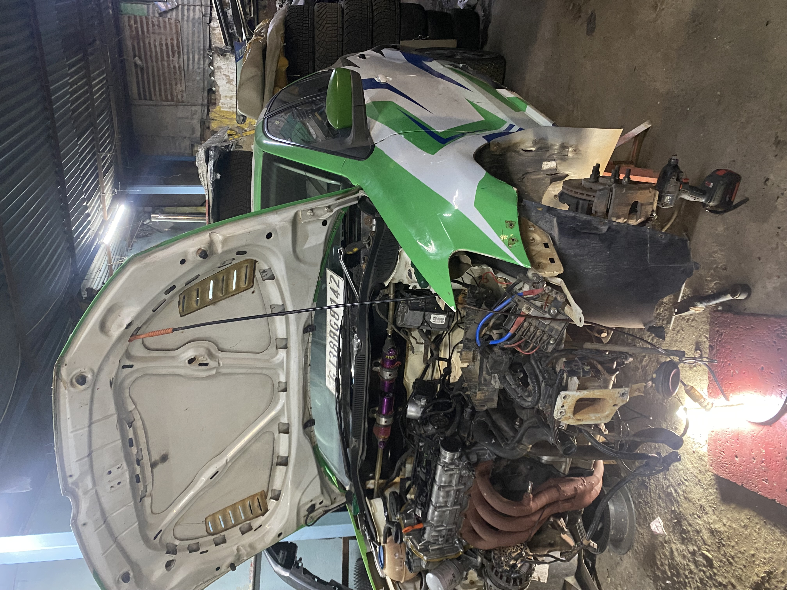
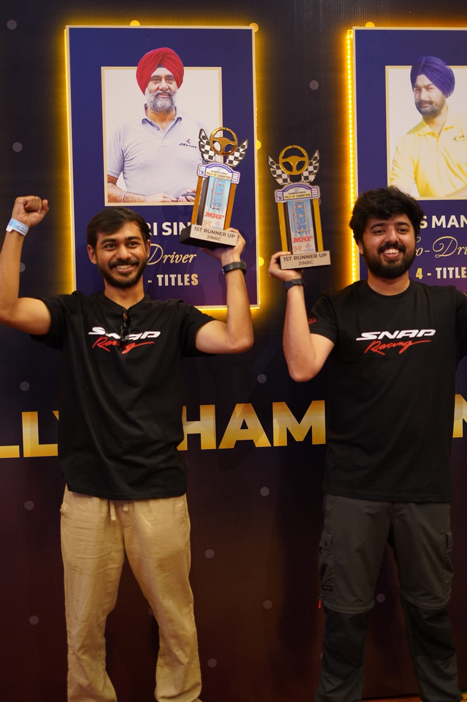

Behind the build
What happens off stage.
The late nights in the garage. The recce runs. The stripped engine. Every podium is built before the stage even starts.



Two drivers from Calicut. One VW Polo #41. P2 in the Junior INRC on debut — one of the stories Indian motorsport is starting to talk about.

Abhimanyu Sajeevan, 27, from Calicut. IIT Bombay Mechanical Engineering '17. Finance lead in Bengaluru by day. One karting session in June 2024 turned into a national rally seat thirteen months later — and a runner-up trophy in the Junior INRC five months after that.
He grew up in Dubai watching F1 and grinding Need for Speed. He joined Garage Snap Racing on the strength of one session and was trained by multiple-time INRC champion Fabid Ahmer of Vision 4 Motorsports — spending his first season trading times with India's most experienced rally crews.
Vijay Anand, his co-driver, is from the same city. Trained in co-driving by Raghuram S of Vision 4 Motorsports, Vijay is the voice between Abhimanyu and every blind corner in India — reading the notes, calling the line, trusting the driver at 140 km/h. Two kids from Calicut, aiming at a piece of Indian motorsport history.
| Full Name | Abhimanyu Sajeevan |
| Age | 27 years |
| From | Calicut, Kerala · Grew up in Dubai |
| Education | IIT Bombay · Finance |
| Profession | Finance professional · Bengaluru |
| Car | VW Polo · White/Green livery · #41 |
| Co-driver | Vijay Anand |
| Team | Garage Snap Racing |
| Debut Season | P2 JINRC · P4 INRC3 overall · 2025–26 |
| 2026–27 Target | P1 overall — or a podium every round |
| Driver coach | Fabid Ahmer · Multiple-time INRC champion · Vision 4 Motorsports |
| Co-driver coach | Raghuram S · Vision 4 Motorsports |
| @abhiii_manyu | |
| Other pursuits | Football striker · Autocross champion |
Five chapters that took him from a PlayStation controller in an Abu Dhabi apartment to trading times with India's best.
Grew up overseas. Racing lived on screen — Need for Speed and F1 broadcasts planted the obsession early.
Returned home in the eighth standard. Found school, found football, kept the racing dream in the back pocket.
Mechanical Engineering, Class of '17. The engineer's eye for systems, tolerance, and feedback — later crucial in the co-driver seat and the garage.
Finance lead in an analytics team. The day job funds the passion. Autocross champion on the weekends — no shortcuts, just hours.
One session in Bengaluru changed the trajectory. Caught national driver Athira Murali's eye. Garage Snap Racing opened the seat.
Debut season. P2 JINRC · P4 INRC3 overall. Missed round one, survived a mechanical failure in the finale, still on the podium.
Snap Racing, Blue Blood Racing, mechanics, spotters, friends, family. Everyone at the start line before the first stage of the rally.
The late nights in the garage. The recce runs. The stripped engine. Every podium is built before the stage even starts.

A package that's rare in Indian motorsport: earned seat, engineer's brain, and an audience-ready narrative.
IIT Bombay mechanical. Understands the car as an engineer, not a passenger. Reads feedback, trusts data, and sleeps on setup.
Football striker and local league captain. Autocross champion. Rally is the sum: the athlete's body, the quant's head, the captain's composure.
Instagram tone is witty, educational, honest. "Full send, no regrets." Content that wins the algorithm without chasing it — because it's real.
The seat was earned on talent and preparation, not bought. A storyline journalists want to write — and sponsors want to be part of.